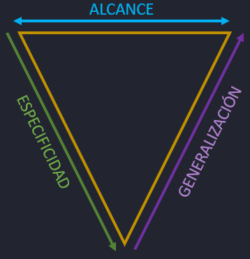
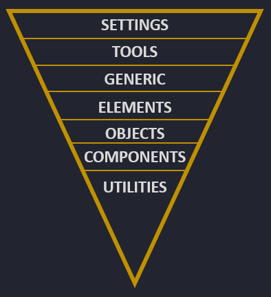

¿Que es ITCSS?
Es una arquitectura que organiza los estilos CSS de manera jerárquica, visualizándola como un triángulo invertido. Esta estructura ayuda a mantener el código limpio, modular y escalable. El triángulo invertido se divide en tres áreas principales: alcance, especificidad y generalización.

Alcance
-
Definición
El alcance se refiere a cuántas veces un estilo se aplicará a los elementos en tu aplicación. Los estilos con un alcance más amplio afectan a muchos elementos, mientras que los estilos con un alcance más limitado afectan solo a elementos específicos.
-
Ejemplo
Si usas un selector de tipo como h1 en tu CSS, este selector tiene un alto alcance porque afecta a todos los elementos <h1> en tu aplicación. En cambio, un selector de clase específico como .header-title tiene un alcance más limitado, afectando solo a los elementos con esa clase.
Especificidad
-
Definición
La especificidad se refiere a qué tan concreto es un selector. Los selectores más específicos, que tienen una mayor "especificidad", deben aparecer más abajo en la hoja de estilos para sobrescribir los estilos menos específicos.
-
Ejemplo
Un selector ID como #main-header tiene una alta especificidad y suele aparecer en la parte inferior de la hoja de estilos para asegurarse de que sobreescriba los estilos aplicados por selectores de clase como .header, también se suelen colocar al final las clases de utilidad, ya que a menudo se usan con !important lo que las hace aún más específicas.
Generalización
-
Definición
La generalización se refiere a qué tan genérico es un selector. Los selectores generales suelen estar en la parte superior, mientras que los selectores más específicos están en la parte inferior. Esto ayuda a asegurar que los estilos generales se apliquen primero y los estilos más específicos se apliquen solo cuando sea necesario.
-
Ejemplo
Las reglas generales de diseño como body o .container se colocan en la parte superior, ya que se aplican a muchas partes de la aplicación. En cambio, los estilos de componentes específicos como .nav-bar, header se colocan más abajo, ya que se aplican a casos más concretos por lo que no tienen tanto alcance.
Resumen
Los estilos ubicados más abajo tienen menos alcance pero más especificidad, mientras que los estilos más arriba tienen más alcance pero menor especificidad. Esta organización asegura que los estilos generales se apliquen primero, y los estilos específicos se apliquen posteriormente para ajustar y sobrescribir los estilos generales según sea necesario.
Entonces este sistema nos da una forma muy clara de organizar nuestros estilos en función de la especificidad y así podemos jugar con la cascada de CSS a nuestro favor.
Capas ITCSS

Capa - Settings
La capa de Settings incluye variables y configuraciones de preprocesadores como Sass o PostCSS. En esta capa, defines valores como colores, tipografías, tamaños de fuente y otros parámetros que se utilizarán a lo largo de tu CSS. Aunque estas variables son fundamentales para mantener la consistencia y facilitar los cambios en el diseño, no generan ningún CSS por sí solas. Simplemente proporcionan valores que serán utilizados por otras partes de tu código.
// _settings.scss
$primary-color: #3498db;
$font-stack: 'Helvetica Neue', Arial, sans-serif;
$base-font-size: 16px;
Aclaración que Settings no genera código CSS
Algo que debemos aclarar para lo que es Settings y Tools, se supone que estas carpetas al transpilar a CSS no generan como tal código CSS. Es importante saber que la mayoria de arquitecturas fueron pensadas para aprovechar las ventajas de los preprocesadores y es por eso que la documentación de la estructura de carpetas de esta arquitectura (ITCSS) dice que estas carpetas no generan código CSS al transpilarse.
Para entender esto que estamos comentando es conocer la diferencia de las variables SCSS con las variables nativas de CSS, ya que las carpetas Setting y Tools guardan dentro variables, mixins y funciones.
Diferencias entre Variables SCSS y Variables CSS Nativas:
Variables SCSS:
-
Las variables en SCSS se declaran sueltas, sin necesidad de estar dentro de un selector como :root{}.
-
Ejemplo:
$primary-color: #3498db;
$font-size: 16px;
-
Estas variables no generan ningún output CSS por sí solas. Son reemplazadas en el código CSS durante el proceso de compilación. Es decir, cuando usas $primary-color en tu SCSS, el compilador lo reemplaza con #3498db en el archivo CSS final.
-
Estas variables no existiran como tales en el archivo CSS final. Solo los valores se integran en las reglas CSS.
Variables CSS Nativas:
-
Se declaran dentro de un selector, típicamente :root, para estar disponibles globalmente.
-
Ejemplo:
:root {
--primary-color: #3498db;
--font-size: 16px;
}
-
Estas variables están disponibles en el archivo CSS final y pueden ser usadas en cualquier lugar donde se soporte CSS Variables.
Uso en ITCSS y Atomic Design:
Cuando utilizas ITCSS en combinación con Atomic Design:
-
settings/: Aquí defines tus variables SCSS, como $primary-color, $font-size, etc.
-
tools/: Aquí defines tus mixins y funciones SCSS, que pueden utilizar las variables de settings.
Proceso de Compilación:
-
Cuando compilas SCSS a CSS, las variables SCSS no generan ningún código CSS por sí mismas. Son usadas internamente por SCSS para reemplazar valores en las reglas CSS.
-
El resultado final solo contiene CSS con valores fijos, no variables. Por ejemplo:
.button {
background-color: $primary-color;
font-size: $font-size;
}
Se compila a:
.button {
background-color: #3498db;
font-size: 16px;
}
Variables nativas en ITCSS
Actualmente el uso de preprocesadores está en decaida, ya que tenemos el uso de POSTCSS que nos da todas las ventajas de un procesador con plugins (postcss-mixins, postcss-preset-env) utilizando css nativo.
Nosotros podemos utilizar CSS nativo dentro de la arquitectura ITCSS, y en lo que cabe respecto a las carpetas Settings y Tools, la norma que nos dice que estas carpetas no generan código CSS ya que estan pensadas para utilizar variables SCSS y estan nunca existiran en nuestro archivo CSS transpilado, lo que pasará es que esa norma ya no se cumplirá ya que nosotros declaremos nuestras variables dentro de :root{} y al transipalarse a CSS estas si existiran.
Miremos como quedaria nuestra carpeta Settings
settings/
│
├── _colors.css
├── _typography.css
└── _layout.css
Contenido de cada archivo:
_colors.css
:root {
--primary-color: #3498db;
--secondary-color: #2ecc71;
--background-color: #ecf0f1;
}
_typography.css:
:root {
--font-family-primary: 'Helvetica, Arial, sans-serif';
--font-size-base: 16px;
--font-size-heading: 2rem;
}
_layout.css:
:root {
--spacing-small: 8px;
--spacing-medium: 16px;
--spacing-large: 32px;
}
Luego, puedes importar estos archivos en tu archivo principal main.css o en cualquier otro archivo CSS que los necesite:
@import 'settings/_colors.css';
@import 'settings/_typography.css';
@import 'settings/_layout.css';
Capa - Tools
La capa de Tools se refiere a mixins, funciones y otras herramientas que te ayudan a generar CSS de manera más eficiente. Al igual que la capa de Settings, la capa de Tools no produce CSS por sí misma, sino que ofrece utilidades para ser usadas en otras partes de tu hoja de estilos. Los mixins y funciones te permiten reutilizar fragmentos de código y aplicar estilos de manera más dinámica.
// _tools.scss
@mixin clearfix {
&:before, &:after {
content: "";
display: table;
}
&:after {
clear: both;
}
}
@function px-to-rem($px) {
$base-font-size: 16px; // o usa la variable definida en Settings
@return $px / $base-font-size * 1rem;
}
Los niveles Settings y Tools están orientados a la configuración y herramientas de preprocesadores como Sass o PostCSS. Aunque estos niveles no generan CSS directamente (solo si utilizamos SCSS ya que si utilizamos CSS nativo si genera CSS directo), son esenciales para la organización y el mantenimiento del código. Puedes combinar ambos niveles en una sola carpeta si lo prefieres, ya que tanto las variables como los mixins y funciones se utilizan en conjunto para construir el CSS final.
Capa - Generic
La capa Generic es la primera en la que empezamos a generar CSS real que se aplica a nuestro documento. En esta capa, se incluyen estilos generales que afectan a la mayoría de los elementos, como los resets o normalize de CSS, que eliminan los estilos predeterminados del navegador y establecen una base consistente para todos los navegadores. También es común definir propiedades globales como box-sizing, que establece cómo se calculan las dimensiones de los elementos en toda la aplicación.
Normalize.css
/*! normalize.css v3.0.2 | MIT License | git.io/normalize */
html {
font-family: sans-serif; /* 1 */
-ms-text-size-adjust: 100%; /* 2 */
-webkit-text-size-adjust: 100%; /* 2 */
}
body {
margin: 0;
}
/**
* Remove the gray background color from active links in IE 10.
*/
a {
background-color: transparent;
}
Reset y box-sizing
/* Box-sizing para todos los elementos y pseudoelementos*/
*,
*::before,
*::after {
box-sizing: border-box;
}
/*Reset básico para eliminar márgenes de encabezados*/
h1,h2,h3,h4,h5,h6{
margin: 0;
}
En conclusión la capa Generic crea una base común para todos los elementos en la página. Al utilizar resets o normalize, eliminas las diferencias predeterminadas entre navegadores, asegurando que todos los elementos se vean y se comporten de la misma manera desde el principio. Luego, a partir de esta base, podrás agregar estilos más específicos y detallados en las capas siguientes.
Capa - Elements
La capa Elements es donde defines los estilos básicos para los elementos HTML estándar, como h1, img, a, button, entre otros. En esta capa, comienzas a aplicar estilos personalizados que afectan directamente la apariencia de tu aplicación. A diferencia de la capa Generic, que establece una base neutral, en Elements empiezas a darle identidad visual a tu sitio, definiendo cómo se verán y comportarán los elementos básicos en toda la aplicación.
/* _elements.css */
/* Estilos para encabezados */
h1, h2, h3 {
font-family: 'Arial', sans-serif;
color: #333;
}
/* Estilos para imágenes */
img {
max-width: 100%;
height: auto;
border-radius: 8px;
}
/* Estilos para enlaces */
a {
color: #3498db;
text-decoration: none;
}
a:hover {
text-decoration: underline;
}
En la capa Elements, cada estilo que defines tiene un impacto directo en la apariencia de tu aplicación. Por ejemplo, al darle un color y una fuente específica a los encabezados, estás estableciendo cómo se verá el texto en toda la página. Al definir el estilo de las imágenes y los enlaces, también estás controlando aspectos clave de la experiencia visual y de usuario. Esta capa es fundamental para comenzar a personalizar la interfaz de tu aplicación según tu diseño.
Consejos para Generic y Elements
Puede haber confusion entre las capas Generic y Elements, a continuación se muestra una estrategia para mantener clara la separación entre Generic y Elements.
Generic: Solo Resets y Normalizaciones
En la capa Generic, enfócate en eliminar los estilos predeterminados del navegador que pueden causar inconsistencias en el diseño. Esto incluye:
-
Quitar márgenes y paddings.
-
Asegurar que box-sizing esté configurado de manera consistente.
-
Eliminar decoraciones de enlaces o bordes predeterminados de imágenes.
-
Cualquier ajuste que busque neutralizar los estilos predeterminados de los navegadores.
Ejemplo en Generic
/* Eliminar márgenes de encabezados */
h1, h2, h3, h4, h5, h6 {
margin: 0;
}
/* Eliminar subrayado y color predeterminado de los enlaces */
a {
text-decoration: none;
color: inherit;
}
/* Quitar espaciado alrededor de las imágenes */
img {
margin: 0;
padding: 0;
border: 0;
display: block;
}
Elements: Dar Identidad Visual
En la capa Elements, es donde puedes empezar a aplicar propiedades que definan cómo se verán los elementos según el diseño de tu sitio. Esto incluye:
-
Definir max-width o height para imágenes o contenedores.
-
Establecer fuentes, colores, márgenes, paddings específicos, etc.
-
Añadir bordes, sombras, o cualquier otra propiedad que le dé estilo a los elementos.
Ejemplo en Elements:
/* Estilos específicos para encabezados */
h1, h2, h3 {
font-family: 'Arial', sans-serif;
color: #333;
margin-bottom: 16px; /* Estilo específico que no va en Generic */
}
/* Estilos específicos para enlaces */
a {
color: #3498db;
text-decoration: underline; /* Añadiendo una decoración específica */
}
/* Estilos específicos para imágenes */
img {
max-width: 100%;
border-radius: 8px;
box-shadow: 0 4px 6px rgba(0, 0, 0, 0.1);
}
Resumen:
Esta separación te ayudará a mantener tu CSS bien organizado y fácil de mantener.
Unir Generic - Elements
Otra opcion que tenemos es unirlas ya que tienen sentido entre si y seria menos confuso, aqui mezclariamos los generic asignandole ahi mismo las caracteristicas de los elements.
Objects
En la capa Objects empezamos a utilizar clases CSS, alejándonos de los selectores de elementos que hemos utilizado en capas anteriores. Los objetos en esta capa son clases altamente reutilizables que proporcionan patrones de estructura, clases como .container o .ui-list que habiamos visto anteriormente, pero sin añadir ningún tipo de decoración visual, como colores o fuentes.
No están vinculados a un componente específico, sino que son genéricos y pueden aplicarse en distintos contextos. Aquí es donde introduces sistemas de grid, contenedores de flexbox, y otras estructuras que ayudan a organizar y alinear contenido.
En la capa Objects, el enfoque está en la estructura (ui-list define estructura) y la disposición (posición de los elementos).
Esta capa permite que diferentes componentes compartan la misma estructura o disposición sin necesidad de duplicar estilos. Por ejemplo, puedes tener una clase .grid que utilices tanto en la sección de galería de imágenes como en la lista de productos, asegurando que ambos se alineen de manera consistente.
-
.container: Una clase que añade margin: auto para centrar el contenido horizontalmente y max-width para limitar el ancho.
-
.flex-center: Una clase que aplica display: flex y centra el contenido tanto vertical como horizontalmente.
-
.grid: Una clase que establece un sistema de grid básico con columnas y espacio entre ellas.
/* _objects.css */
/* Contenedor centrado */
.container {
max-width: 1200px;
margin: 0 auto;
padding: 0 16px;
}
/* Flexbox centrado */
.flex-center {
display: flex;
justify-content: center;
align-items: center;
}
/* Sistema de grid */
.grid {
display: grid;
grid-template-columns: repeat(auto-fit, minmax(200px, 1fr));
gap: 16px;
}
CONSEJO
Un buen criterio para identificar un objeto es preguntarse: "Si esta clase cambia en un tema oscuro o claro, ¿debería modificarse?" Si la respuesta es sí, entonces probablemente no es un objeto, ya que los objetos deben ser neutrales y solo encargarse de la estructura y disposición, no de la apariencia visual.
Components
La capa Components es donde definimos la mayor parte de los estilos de nuestra aplicación. Aquí es donde realmente damos forma y estilo a los diferentes elementos que componen la interfaz de usuario. A diferencia de los objetos, que se centran en la estructura y son muy reutilizables, los componentes aplican estilos específicos que incluyen colores, tipografías, y otros aspectos visuales. Esto los hace menos reutilizables que los objetos, ya que están diseñados para cumplir funciones específicas dentro de la aplicación.
Ejemplo de Components:
-
.main-header: Una clase que aplica estilos específicos al encabezado principal de la aplicación, como colores de fondo, tipografía, y sombras.
-
.card: Una clase que define el estilo de una tarjeta, incluyendo bordes, fondos, y espaciados internos.
-
.btn-primary: Un botón estilizado con colores y efectos específicos para llamar la atención como acción principal.
En esta capa, es donde se aplica el theming, es decir, donde se definen los colores, fuentes, y demás elementos que dan identidad visual a la aplicación. Los componentes son más concretos y menos reutilizables, ya que están diseñados para propósitos específicos.
/* _components.css */
/* Estilos para el encabezado principal */
.main-header {
background-color: #3498db;
color: #fff;
padding: 20px;
text-align: center;
box-shadow: 0 4px 6px rgba(0, 0, 0, 0.1);
}
/* Estilos para una tarjeta */
.card {
background-color: #fff;
border-radius: 8px;
box-shadow: 0 4px 8px rgba(0, 0, 0, 0.1);
padding: 16px;
margin: 16px 0;
}
/* Estilos para un botón primario */
.btn-primary {
background-color: #e74c3c;
color: #fff;
padding: 10px 20px;
border: none;
border-radius: 4px;
cursor: pointer;
}
Los componentes son fundamentales para definir la apariencia y la funcionalidad específica de los elementos dentro de tu aplicación. Mientras que los objetos se centran en la estructura, los componentes se encargan de cómo se ven y cómo interactúan con los usuarios.
Utilities
La capa Utilities contiene clases de utilidad que están diseñadas para aplicar estilos específicos de manera rápida y sencilla. Estas clases suelen ser de propósito general y están diseñadas para modificar o sobrescribir estilos establecidos en capas anteriores, como Objects o Components. Las clases de utilidad son útiles para ajustar rápidamente el diseño sin tener que modificar los estilos base.
Las clases en Utilities suelen usar !important para asegurar que sus estilos sobrescriban cualquier otro estilo aplicado anteriormente, sin que esto haga que el CSS sea menos mantenible. Estas clases están pensadas para ser aplicadas de forma puntual para ajustes específicos y no para definir estilos generales.
Ejemplo de Utilities:
-
.is-error: Una clase para aplicar estilos de error, como un borde rojo o un fondo de advertencia.
-
.is-centered: Una clase para centrar un elemento dentro de su contenedor.
-
.u-mb-16: Una clase para añadir un margen inferior de 16px a un elemento.
/* _utilities.css */
/* Clase de utilidad para indicar un error */
.is-error {
border: 2px solid red !important;
background-color: #fdd;
}
/* Clase de utilidad para centrar un elemento */
.is-centered {
text-align: center !important;
}
/* Clase de utilidad para añadir un margen inferior */
.u-mb-16 {
margin-bottom: 16px !important;
}
Estructura de carpetas
La estructura de carpetas usando ITCSS quedaría así:
styles
├── settings
│ ├── _colors.scss
│ └── _typography.scss
├── tools
│ └── _mixins.scss
├── generic
│ ├── _normalize.scss
│ └── _box-sizing.scss
├── elements
│ ├── _headings.scss
│ ├── _images.scss
│ └── _links.scss
├── objects
│ ├── _container.scss
│ ├── _grid.scss
│ └── _ui-list.scss
├── components
│ ├── _button.scss
│ ├── _card.scss
│ ├── _forms.scss
│ ├── _header.scss
│ └── ...
├── utilities
│ ├── _typography.scss
│ └── _error.scss
└── index.scss
Inconveniente con ITCSS
Como vemos, con ITCSS tenemos una estructura muy clara de donde va cada tipo de estilo, aunque la carpeta components tenderá a crecer mucho. ITCSS pretende ser un sistema muy flexible y por eso deja a nuestra elección como ordenar los componentes.
Más información: ITCSS: Scalable and Maintainable CSS Architecture -> https://www.xfive.co/blog/itcss-scalable-maintainable-css-architecture/